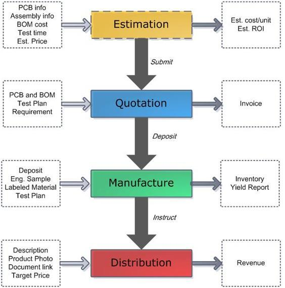

Propagate Manual
Propagate:
Agile manufacturing for small batch PCB, kitting and assembly！
Please check this link and upload your project: http://www.seeedstudio.com/propagate/
Terms
- Sample – A validated working sample shipped to SEEED
- BOM – The bill of material needs precise part name, product ID in major distributor, and verified stock
- PCB File – Gerber file or Eagle file, with requirements
- Test Plan – Step by step straightforward guide to validate manufactured products
- NPI – New product integration
- ROI – return of investment
Basic Work Flow

Specification
Materials
Bill of Material is the key factor for a successful PROPAGATE case, we will do our best to communicate and help. But please beware the risk of fake, lead time, out of stock, model confusion and etc. The preferred way is using popular components, prepare alternatives and plan ahead.
- Customer Provide. For the first round of production, we need you to provide the materials needed, please order via major electronic distributors like mouser, digikey, farnell and ship to us. We will accountant the cost of custom declarations for you.
- Components Pool: Seeed maintains a pool of regular components like resistors, capacitors, pin headers and connectors, most of them are free to use. Please check out our components inventory, and add the ID into your BOM. Open parts library
- Sourcing for customer: Due to the complexity and the need for material validation (check out the story of fake atmega328 from Sparkfun), we only do sourcing for order over 1000 pcs and strategic partners now.
In anyway, please estimate the BOM cost for a quotation session, we will reply with a precise quotation in Invoice session before your payment.
PCB capacity
| Multi Layers
|
1-4
|
| PCB Material
|
FR-4
|
| Minimum Qty
|
100
|
| Maximum Size
|
500mm X 1100mm
|
| Board Thickness
|
0.4mm, 0.6mm, 0.8mm, 1.0mm, 1.2mm, 1.6mm2.0mm or 2.4mm
|
| Thickness Tolerance (t≥0.8mm)
|
± 10%
|
| Thickness Tolerance (t<0.8mm)
|
± 10%
|
| Insulation Layer Thickness
|
0.075mm--5.00mm
|
| Minimum Line
|
6mil
|
| Minimum Space
|
6mil
|
| Out Layer Copper Thickness
|
1oz(35um)
|
| Inner Layer Copper Thickness
|
17um—100um
|
| Drilling Hole (Mechanical)
|
0.3mm—6.35mm
|
| Finish Hole (Mechanical)
|
0.3mm—6.30mm
|
| Diameter Tolerance (Mechanical)
|
0.08mm
|
| Registration (Mechanical)
|
0.09mm
|
| Aspect Ratio
|
8:1
|
| Solder Mask Type
|
Photosensitive ink
|
| SMT min Solder Mask Width
|
0.1mm
|
| Min Solder Mask Clearance
|
0.1mm
|
| Plug Hole Diameter
|
0.25—0.60mm
|
| Surface Finish
|
HASL, ENIG, Chem. Tin
|
| Eagle Design Rule:
|
- click to download.
- Drills line and long slot can’t be accepted
- Minimum slot 1mm*1mm
- DRC compatible as rule file attached
- The PCB size is smallest rectangle that can accommodate PCB
|
PCBA
- Single/ Double
- Min 0201
- Up to QFP , 0.5mm
- RoHS
Test
- No Lab test
- No Reliability test
- No defect analysis for yield over 90% (?)
- Power up test
Test Plan
We prefer to help test and follow up any quality issue on the first sight. Please provide a simple and effective test plan of step by step instruction. We will make sure manufactured products will pass the test plan with expected results. A test report will be provided upon test finish.
Test Plan Reference
Repair
Default repair on defect units, recovered units will be counted as accept quantity, defect units reserved for 2 months, could be shipping back to designer or discard.
NPI Target 90% pertentage, carry out defect analysis if yield lower than 90%, try recover defect units if yield higher than 90%.
Repeated production will target 95% yield.
Package
Anti-static plastic bag, separately packed with enough buffer material.
Labelling
Accountings
Manufacture via Propagate
Initial Balance = Deposit - accepted product quantity * Unit cost
- Deposit: After quotation is confirmed, our project manager will send out an invoice. A deposit is needed to initiate new product introduction (NPI). Designer also needs to send an email with following info to propagate@seeedstudio.com to confirm payment:
- email title start with “[PAY] #project number”
- Attachment of Wiring Transfer receipt, Paypal confirmation email or balance guarantee.
- Issuing account name
- Amount and currency
- Accepted product quantity: Designer will decide target quantity, Seeed start manufacture with target quantity and notify yield on batch ends. Due to manufacture loss, accepted product quantity might be less than target. Designer should understand the manufacture risk especially for NPI units. For defect units, Seeed will keep sample and corresponding evidence for review; try to fix, but not taking the responsibility of BOM cost. Seeed will cover corresponding cost of mass defect (over 20%) caused by soldering and PCB.
- Unit cost will base on target quantity, even if the accepted product quantity does not meet corresponding price break.
Distribution via Bazaar
Current Balance =
Sales Qty * Unit Price * (1- handling fee) + Previous Balance
- Sales qty will be calculated each month via bazaar system. Every sales order is archived for review.
- Unit Price will be decided by customer.
- Handling fee includes Paypal/TT/Credit card cost, storage, order handling, logistic, post-sales support, web-store (Bazaar) catalog listing, and shipping loss.
- Designer purchase: Designer could allocate inventory by placing orders in Bazaar. For drop-shipping, just fill in the shipping info and Seeed will handle the rest. Designer could also purchase other product or services for future work. To compensate the process, 10% of all purchases will be returned to designer’s next month balance.
- Balance could be withdrawn once each month to instructed bank account or Bazaar account credit.
Seeed Studio will cover shipping loss.
Wholesale order
Designer with their own distributor network could use bazaar as a logistics center. We integrate this in Designer purchase for easier handling and leave maximal flexibility to Designers. The purchase of their own product will be circled back to themselves deducting handling fees. The 10% compensation is supposed to counteract handling fee impact to wholesale pricing.
Multiple Projects
For each revision, Seeed view it as an individual projects. Each Designer will have a grand balance of all owned projects. After initial deposit is made, future projects could use positive balance.
Risks
It is the user of the Propagate system's duty to understand there are inherent and unavoidable risks when using the service.
Seeed is committed to helping you the user but can not accept responsibility for defects the result of the inherent risks. Risks include Bill Of Material defects, manufacturing process errors and miscommunication. There are other risks which cannot be predicted which may cause your production run to have lower than 100% yield. Seeed will cover the manufacturing cost for defective units but does not take responsibility for loss of materials or any any indirect costs.
Seeed will work with you to ensure your experience goes as smoothly as possible.
FAQ
Please post your questions in QnA session.
See Also
Copyright (c) 2008-2016 Seeed Development Limited (
www.seeedstudio.com /
www.seeed.cc)
This static html page was created from http://www.seeedstudio.com/wiki